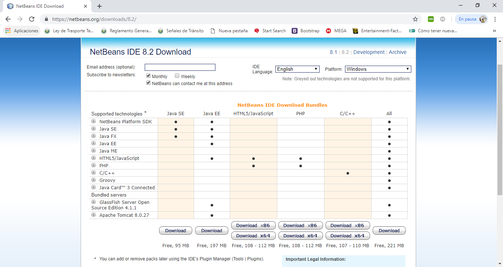
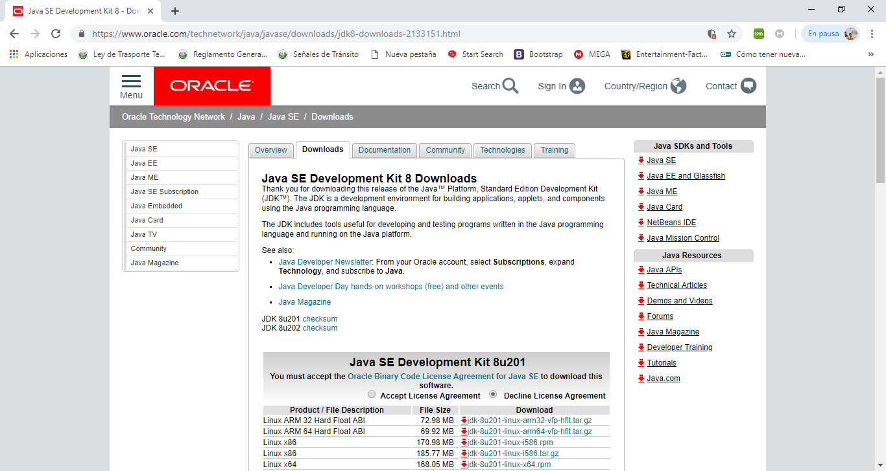
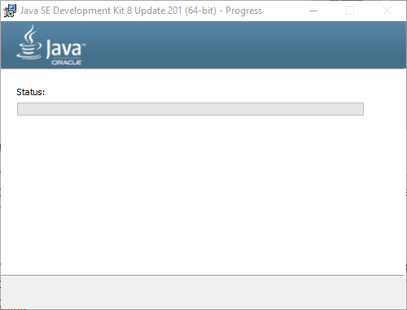
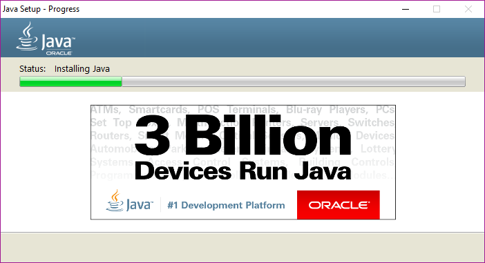
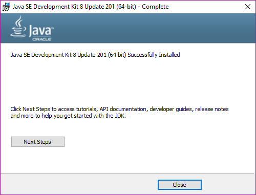
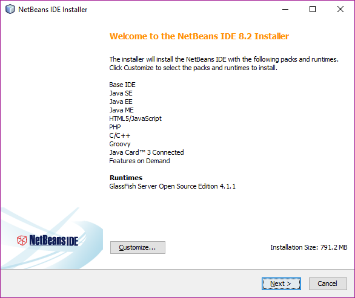
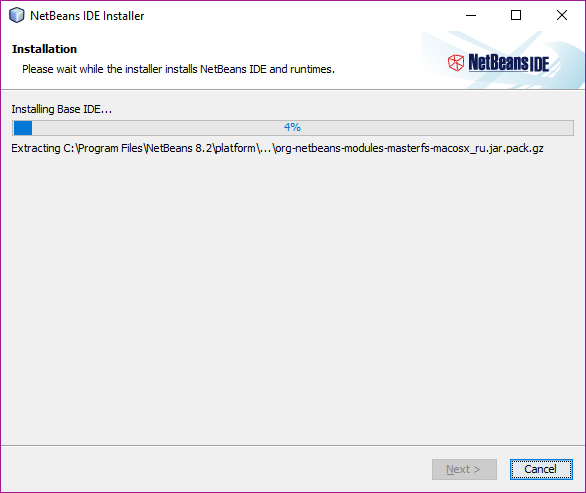

<!DOCTYPE html>
<html lang="en">

<head>
    <meta charset="UTF-8">
    <meta name="viewport" content="width=device-width, initial-scale=1.0">
    <meta http-equiv="X-UA-Compatible" content="ie=edge">

    <!-- Stylesheets references -->
    <link rel="stylesheet" href="../assets/css/style.css">
    <link rel="stylesheet" href="../assets/highlight_styles/androidstudio.css">
    <link href="https://fonts.googleapis.com/css?family=Raleway" rel="stylesheet">
    <link rel="stylesheet" href="https://use.fontawesome.com/releases/v5.7.1/css/all.css"
        integrity="sha384-fnmOCqbTlWIlj8LyTjo7mOUStjsKC4pOpQbqyi7RrhN7udi9RwhKkMHpvLbHG9Sr" crossorigin="anonymous">

    <link rel="icon" href="../assets/images/icons/android.png">

    <title>Instalación Visual Studio IDE/title>
</head>

<body id="id_body">

    <!-- Eductional basic information -->
    <p class="subject">
        Universidad Centroamericana "José Simeón Cañas".<br>
        Programación orientada a objetos.<br>
        Ciclo 01/19.
    </p>

    <!-- Front image -->
    <header id="front-img" style="background-image: url('../assets/images/main/Logo-NetBeans-160401-06.jpg');">
        <div class="blackManta">
            <!-- Float menu implementation -->
            <div class="float-menu">
                <div class="menu-content">
                    <i class="fas fa-bars"></i>
                </div>
                <nav class="menu-side">
                    <div></div>
                    <ul>
                        <li><a href="#introduction">Introdución</a><i class="fas fa-ellipsis-v"></i></li>
                        <li><a href="#down-netbeans">Decargar NetBeans</a><i class="fas fa-download"></i></li>
                        <li><a href="#down-jdk">Descargar JDK</a><i class="fas fa-download"></i></li>
                        <li><a href="#inst-jdk">Instalar JDK</a><i class="fas fa-file-import"></i></li>
                        <li><a href="#inst-netbeans">Instalar NetBeans</a><i class="fas fa-file-import"></i></li>
                    </ul>
                </nav>
            </div>
            <div class="main-front">
                <h1>Instalación NetBeabs.</h1>
                <h3>Domingo, 10 de Marzo de 2019.</h3>
                <div class="grid-div two-columns frontList">
                    <!-- Two-columns item -->
                    <div class="article-body">
                        <h4>Temario:</h4>
                        <ul>
                            <li>
                                Introdución
                            </li>
                            <li>
                                Decargar NetBeans
                            </li>
                            <li>
                                Descargar JDK
                            </li>
                            <li>
                                Instalar JDK
                            </li>
                            <li>
                                Instalar NetBeans
                            </li>
                        </ul>
                    </div>
                    <div class="article-body">

                    </div>
                </div>
                <i class="fas fa-chevron-down" id="down-button"></i>
            </div>
        </div>
    </header>

    <!-- Main Content -->
    <article class="content">
        <!-- Main title -->
        <header class="title-content" id="title-content">
            <div id="brand">
                <h1>Instalación NetBeans</h1>
            </div>
        </header>

        <!-- Sections method -->
        <section id="introduction">
            <!-- Sections Titles -->
            <h2>
                Introdución.
            </h2>
            <!-- Single paragraphs -->
            <p>
                El siguiente documento tiene como principal objetivo, servir de guía al estudiantado para facilitarle la
                instalación del software NetBeans IDE, que se recomienda utilizar a lo largo del curso Programación
                Orientada a Objetos, ciclo 01 2019.
            </p>
        </section>
        <section id='down-netbeans'>
            <h2>
                Descargar NetBeans
            </h2>
            <p>
                Para iniciar se debe abrir el navegador web de preferencia, estando dentro, copiar y pegar la siguiente
                dirección <a href="https://netbeans.org/downloads/8.2/">vhttps://netbeans.org/downloads/8.2/</a>, puedes
                acceder a la pagina presionando la tecla Ctrl +
                clic en el vínculo y se abrirá automáticamente en el navegador por defecto, al finalizar este proceso se
                mostrara la siguiente pagina web:
            </p>
            <figure>
                
            </figure>
            <p>
                A continuación hacer clic en “Download” en la versión que mas se acople a las necesidades, para el curso
                bastara haciendo clic al primer botón ya que trae las tecnologías suficientes que se utilizaran a lo
                largo del curso.
            </p>
        </section>
        <section id='down-jdk'>
            <h2>
                Descargar JDK
            </h2>
            <p>
                Es necesario descargar el JDK (Java Development Kit) ya que es un conjuto de herramientas en el cual se
                encuentra el compilador javac, este es el encargado de convertir el código fuente (.java) en bytecode
                (.class), el cual posterior mente será interpretada y ejecutado con la JVM (Java Virtual Machine), entre
                otras herramientas.
            </p>
            <p>
                Estas herramientas se pueden descargar desde el siguiente enlace:
                <a href="https://www.oracle.com/technetwork/java/javase/downloads/jdk8-downloads-2133151.html">https://www.oracle.com/technetwork/java/javase/downloads/jdk8-downloads-2133151.html</a>, el cual se ingresa
                de la misma manera anteriormente explicada y se mostrara la siguiente pagina web.
            </p>
            <figure>
                
            </figure>
            <p>
                Nos ubicamos en la sección de Java SE Development Kit 8u201 aceptar los acuerdos de licencia y descargar el fichero en cual sea compatible con el ordenador.
            </p>
        </section>
        <section id='inst-jdk'>
            <h2>
                Instalar JDK
            </h2>
            <p>
                Luego de haber descargado el paquete, abrir como administrador el paquete y esperar a que el instalador se abra, una vez ahí, hacer click al botón “Next” en dos ocasiones y esperar a que el proceso de instalación finalice.
            </p>
            <figure>
                
            </figure>
            <p>
                Luego hacer click en continuar en la ventana que se mostrara después de haber finalizado el progreso anterior y esperar nuevamente.            
            </p>
            <figure>
                
            </figure>
            <p>
                Al finalizar los procesos hacer clic en “close” y se habrá instalado correctamente.
            </p>
            <figure>
                
            </figure>
        </section>
        <section id='inst-netbeans'>
            <h2>
                Instalar NetBeans
            </h2>
            <p>
                Luego de instalar el JDK se procede a instalar el IDE NetBeans, para eso, buscar el fichero previamente descargado y hacer doble clic.             
            </p>
            <p>
                Se mostrarán todos las tecnologías que se instalaran, esto dependerá de que paquete se descargó.
            </p>
            <figure>
                
            </figure>
            <p>
                Hacer clic en “next” y aceptar los términos y condiciones y hacer “next” nuevamente hasta que se muestre el progreso de instalación.
            </p>
            <figure>
                
            </figure>
            <p>
                Para finalizar la instalación hacer clic en el botón  “Finish”
            </p>
        </section>
    </article>
    <!-- Footer Implementation -->
    <footer>
        <article>
            <p><em>
                    “Siempre parece imposible hasta que se hace”
                </em></p>

            <p id="author">
                Nelson Mandela.
            </p>
        </article>
    </footer>

    <!-- Home Button -->
    <span id="HomeBtn"><i class="fas fa-chevron-up"></i></span>
</body>

<!-- JS scripts area -->
<script src="../assets/js/jquery-3.3.1.min.js"></script>
<script src="../assets/jquery-ui-1.12.1/jquery-ui.min.js"></script>
<script src="../assets/js/javaScript.js"></script>
<script src="../assets/js/highlight.pack.js"></script>
<script>
    hljs.initHighlightingOnLoad();
    sideMenuControl();
    homeBtnControl();
</script>

</html>